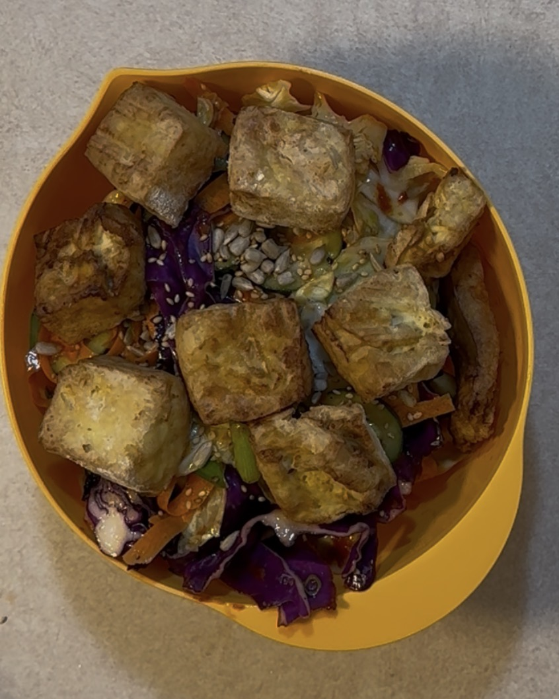

Believe it or not, folks, this is my own recipe. You can watch me make it on TikTok

This tasty and refreshing salad combines crunchy cabbage, crispy tofu, and a flavorful dressing for a delightful meal.
Ingredients:
Firm Tofu
Sesame Oil
Olive Oil
Gochujang
Soy Sauce
Honey Mustard
Lemon Juice
Flour
Green Cabbage
Red Cabbage
Carrot
Cucumber
Green Onion
Salt
Pepper
Garlic Clove
Sunflower Seeds
Sesame Seeds
Equipment
Mixing Bowls
Air Fryer
Knife
Cutting Board
Measuring Spoons
Spatula (or whatever mixing utensil you prefer)
Grater (for carrot)
Tongs (optional)
Colander (for draining tofu)
Instructions:
Press the tofu to remove excess water. You can do this by wrapping it in a clean towel and placing a heavy object on top for about 15-20 minutes.
While the tofu is being pressed, prepare the vegetables. Thinly slice the green and red cabbage, grate the carrot, and thinly slice the cucumber and green onion. Set aside.
In a small bowl, mix together 1 tablespoon of sesame oil, 1 tablespoon of olive oil, 1 tablespoon of gochujang, 1 tablespoon of soy sauce, 1 tablespoon of honey mustard, and 1 tablespoon of lemon juice to make the dressing. Adjust the ingredients to taste if necessary.
Once the tofu is pressed, cut it into bite-sized cubes. In a separate bowl, toss the tofu cubes with a pinch of salt and pepper, and enough flour to lightly coat them.
Preheat your air fryer to 375°F (190°C). Place the coated tofu cubes in the air fryer basket in a single layer. Cook for about 15-20 minutes, shaking the basket halfway through to ensure even cooking, until the tofu is golden brown and crispy.
In a large mixing bowl, combine the sliced cabbage, grated carrot, sliced cucumber, and green onion. Pour the dressing over the vegetables and toss to combine.
Once the tofu is done cooking, add it to the salad and gently toss to combine everything.
Sprinkle sunflower seeds and sesame seeds on top for added crunch and flavor.
Serve immediately and enjoy your delicious cabbage and tofu salad!
This page is created as academic activity only. Background image created using AI.